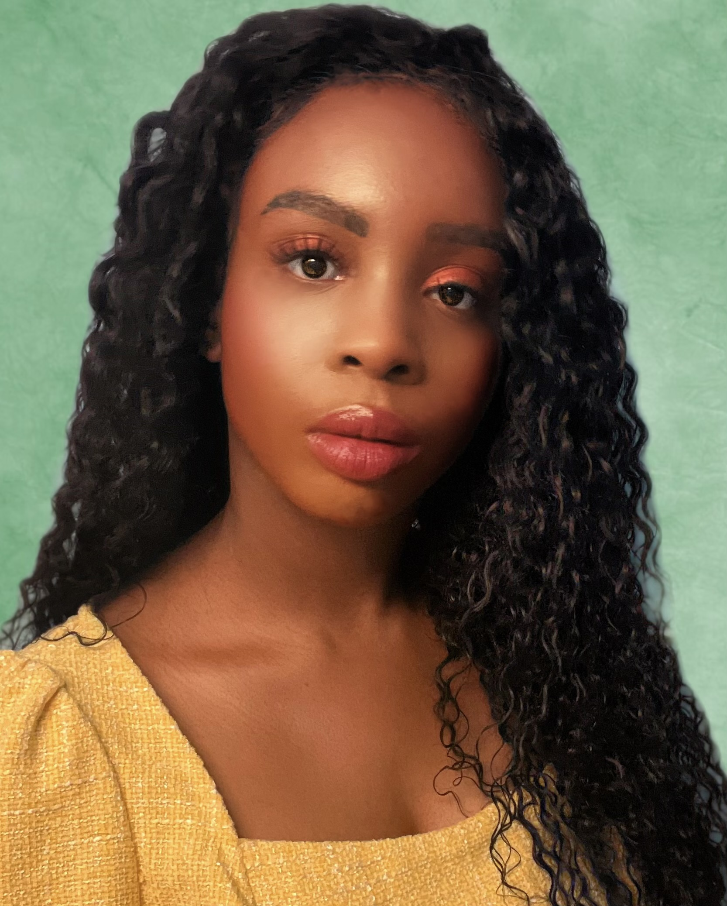

Anyisa
UI UX DeveloperAbout Me
I love watching videos of video game live streams. Creating things and making them cute is my passion. I am logical,creative, and colorful!
I am a very agile developer when problem solving and creating any Algorithm. Creating Adaptive designs for applications creating any API is another one of my specialties. Using a Browser I know how to find any Bug on the backend or frontend. I also understand Cache when it comes to my code. Deploying and Debugging data structures I do on a daily basis with my personal projects. Marking my code with proper documentation is always a must for me when necessary. I know a few frameworks for my frontend development. In addition I have a general understanding of domain names from my time at InMotion. I know how to create, host and deploy a website without any assistance. My code is feature on GitHub and I am basic familiarity with the Git language. My Information Architecture style I try to make my code as simple as possible using the Dry Method. I am open to learning new languages and libraries for the minification of my code. Making sure my designs are responsive and mobile-first is my main priority. Lastly, I also have experience with sitemaps, wireframes, version controls, and familiarity with SSL's. Mostly, I am also a problem solver who loves coming up with a resolutions.